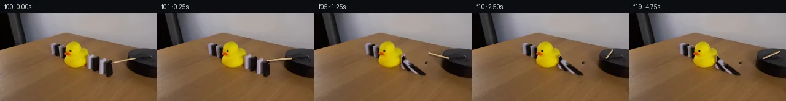

![首帧]()

Round 00
2026-11-05T01:49:42.477146+00:00像素候选变化代码 +349/−0inspection 更新
pixels b458350ca8b64f63 · code 6b137a9d4c3f239d
查看本轮 generate.py 真实 diff
--- previous/generate.py
+++ current/generate.py
@@ -0,0 +1,349 @@
+"""PixelWorld continuation using local source texture warps and analytic motion."""
+from pathlib import Path
+import json
+import hashlib
+import base64
+import math
+
+import cv2
+import numpy as np
+from PIL import Image, ImageDraw
+from scipy.ndimage import gaussian_filter, binary_fill_holes
+
+import artifact_io
+
+ROOT = Path(__file__).resolve().parent
+W, H = 256, 144
+S = 4
+source = np.array(Image.open(ROOT / 'first_frame.png').convert('RGB'))
+assert source.shape == (H, W, 3)
+yy, xx = np.mgrid[:H, :W]
+
+
+def poly_mask(points):
+ mask = np.zeros((H, W), np.uint8)
+ cv2.fillPoly(mask, [np.rint(points).astype(np.int32)], 255)
+ return mask.astype(np.float32) / 255
+
+
+def feather(mask, sigma=0.4):
+ return gaussian_filter(mask.astype(np.float32), sigma)
+
+
+def compose(canvas, color, alpha):
+ if np.ndim(alpha) == 2:
+ alpha = alpha[..., None]
+ return canvas * (1 - alpha) + color * alpha
+
+
+# Visible source silhouettes. The order is back to front, from duck to motor.
+domino_polygons = [
+ [(148, 67), (153, 69), (152, 73), (150, 75), (150, 89),
+ (147, 91), (144, 91), (142, 89), (142, 71)],
+ [(158, 70), (162, 72), (162, 91), (159, 94), (153, 95),
+ (150, 92), (150, 75), (154, 72)],
+ [(170, 73), (173, 75), (172, 79), (170, 81), (170, 97),
+ (166, 99), (163, 98), (162, 95), (162, 78), (165, 76)],
+ [(179, 76), (182, 77), (184, 96), (183, 99), (179, 102),
+ (174, 102), (172, 100), (172, 81), (176, 78)],
+]
+base_centers = [(147, 91), (157, 94), (167, 98), (178, 101)]
+heights = [23.0, 23.0, 24.0, 25.0]
+final_angles = [23.0, 47.0, 61.0, 72.0]
+onsets = [.94, .72, .50, .28]
+domino_masks = []
+for points in domino_polygons:
+ m = poly_mask(points)
+ # Crop the visible material from the real frame. Face textures include the
+ # real lighting and the small purple-gray colour cast of the pale blocks.
+ domino_masks.append(feather(m, .32))
+
+
+# Rubber duck silhouette, including eye and beak, measured from RGB classes.
+duck_roi = poly_mask([
+ (116, 45), (126, 46), (131, 50), (133, 57), (142, 57),
+ (146, 63), (146, 67), (142, 71), (143, 76), (145, 80),
+ (142, 85), (135, 88), (126, 90), (115, 89), (109, 86),
+ (105, 82), (103, 76), (105, 70), (101, 67), (103, 64),
+ (104, 57), (108, 51), (112, 48),
+])
+r, g, b = source.astype(float).transpose(2, 0, 1)
+duck_seed = ((r > 142) & (g > 80) & (b < 70) &
+ ((g - b > 73) | (r - g > 62)) & (duck_roi > 0))
+duck_seed = binary_fill_holes(duck_seed).astype(np.uint8)
+duck_seed = cv2.morphologyEx(duck_seed, cv2.MORPH_CLOSE, np.ones((3, 3), np.uint8))
+duck_seed = cv2.dilate(duck_seed, np.ones((3, 3), np.uint8))
+duck_mask = feather(duck_seed.astype(float) * duck_roi, .35)
+
+
+# Source removal is restricted to measured object footprints. It uses local
+# interpolation plus wood texture from clean foreground in the same image.
+all_domino = np.maximum.reduce(domino_masks)
+domino_erase = cv2.dilate((all_domino > .04).astype(np.uint8),
+ np.ones((3, 3), np.uint8))
+domino_shadow = poly_mask([(142, 88), (150, 89), (164, 94), (181, 98),
+ (187, 104), (178, 106), (163, 101), (146, 95)])
+erase_domino = np.maximum(domino_erase, domino_shadow).astype(np.uint8)
+
… diff truncated; 262 more lines …